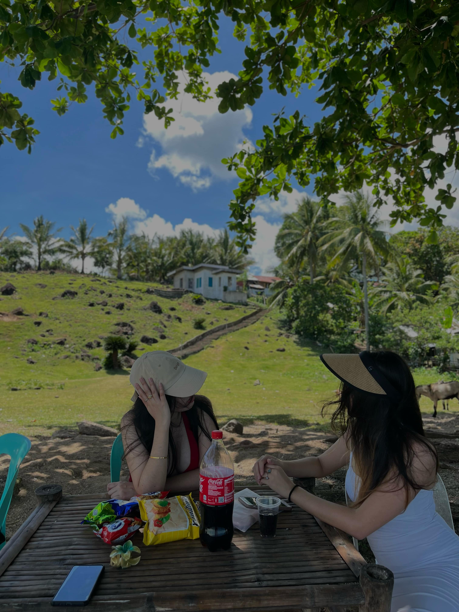

Photography
Capture the beauty of the beach, sunsets, and ocean life with your camera.
Swimming
Enjoy cooling off and floating in the ocean waves.

Picnicking
Bring food and enjoy a meal with the relaxing beach scenery.